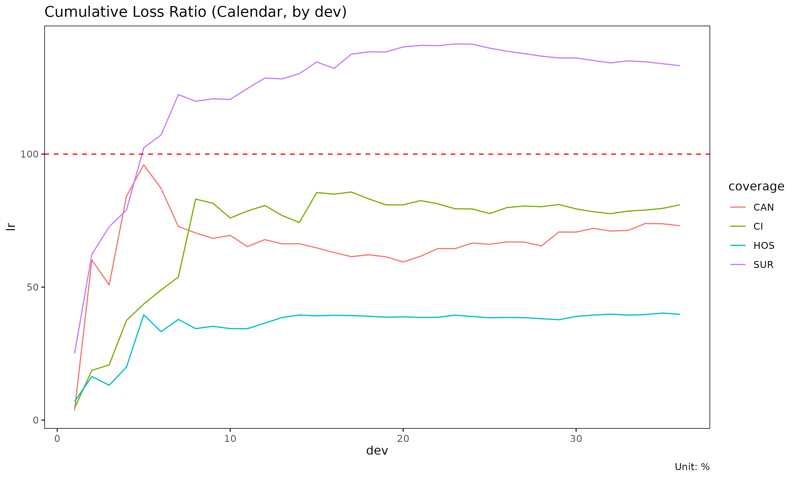

Aggregation frameworks: Triangle, Calendar, Total
Source:vignettes/aggregation-frameworks.Rmd
aggregation-frameworks.RmdThe same long-format experience data can be aggregated three ways
depending on the question being asked. lossratio exposes
one builder per framework. This vignette compares them.
At a glance
| Builder | Output object | Dimension | When to use |
|---|---|---|---|
build_triangle() |
Triangle |
cohort × dev (2D) | SA, ED, CL projection |
build_calendar() |
Calendar |
calendar period (1D) | Calendar-year trend, diagonal effect |
build_total() |
Total |
portfolio total (per group) | High-level loss-ratio comparison |
Conceptually:
-
Trianglepreserves both the cohort axis (when policies were underwritten) and the development axis (how loss accrues over development time). This is the canonical chain-ladder data structure. -
Calendarcollapses cohorts onto the diagonal — each row is one calendar period across all underwriting cohorts. Equivalent to the diagonal sum of the triangle. -
Totalcollapses both dimensions to one value per group. Useful for portfolio-level comparison (which product had the worst loss ratio over the window?).
Triangle (cohort × dev)
library(lossratio)
data(experience)
exp <- as_experience(experience)
tri <- build_triangle(exp, group_var = cv_nm)
head(tri)
#> cv_nm n_obs cohort dev loss rp closs crp margin
#> <char> <int> <Date> <int> <num> <num> <num> <num> <num>
#> 1: SUR 30 2023-04-01 1 0 11191622 0 11191622 11191622
#> 2: CAN 30 2023-04-01 1 6445 12879191 6445 12879191 12872746
#> 3: 2CI 30 2023-04-01 1 468845 7567723 468845 7567723 7098878
#> 4: HOS 30 2023-04-01 1 0 15273272 0 15273272 15273272
#> 5: SUR 29 2023-04-01 2 0 14025885 0 25217507 14025885
#> 6: CAN 29 2023-04-01 2 0 30821344 6445 43700535 30821344
#> cmargin profit cprofit lr clr loss_prop rp_prop
#> <num> <fctr> <fctr> <num> <num> <num> <num>
#> 1: 11191622 pos pos 0.0000000000 0.0000000000 0.00000000 0.2385673
#> 2: 12872746 pos pos 0.0005004196 0.0005004196 0.01356014 0.2745405
#> 3: 7098878 pos pos 0.0619532454 0.0619532454 0.98643986 0.1613181
#> 4: 15273272 pos pos 0.0000000000 0.0000000000 0.00000000 0.3255741
#> 5: 25217507 pos pos 0.0000000000 0.0000000000 0.00000000 0.1890296
#> 6: 43694090 pos pos 0.0000000000 0.0001474810 0.00000000 0.4153853
#> closs_prop crp_prop
#> <num> <num>
#> 1: 0.000000000 0.2385673
#> 2: 0.013560142 0.2745405
#> 3: 0.986439858 0.1613181
#> 4: 0.000000000 0.3255741
#> 5: 0.000000000 0.2082178
#> 6: 0.008953204 0.3608298Each row is one (cohort, dev) cell with cumulative loss / risk premium. Visualise as line plot or heatmap:
plot(tri) # one trajectory per cohort, faceted by group
# With multiple group panels each panel's cells get too narrow to read,
# so use quarterly cohort and dev to bring each panel down to ~10 x 10
# cells. This fits the documentation's display size; in practice you
# can keep monthly resolution by enlarging the plot.
tri_q <- build_triangle(exp, group_var = cv_nm,
cohort_var = "uyq", dev_var = "elap_q")
plot_triangle(tri_q) # cohort × dev heatmap of clr
Use Triangle as input to: - build_ata(),
build_ed() — development factors - fit_cl(),
fit_lr() — projection - detect_cohort_regime()
— structural change detection
Calendar (calendar period only)
cal <- build_calendar(exp, group_var = cv_nm, calendar_var = "cym")
head(cal)
#> cv_nm calendar dev loss rp closs crp margin
#> <char> <Date> <int> <num> <num> <num> <num> <num>
#> 1: 2CI 2023-04-01 1 468845 7567723 468845 7567723 7098878
#> 2: 2CI 2023-05-01 2 788082 27286688 1256927 34854411 26498606
#> 3: 2CI 2023-06-01 3 18122450 42665533 19379377 77519944 24543083
#> 4: 2CI 2023-07-01 4 70259233 68265637 89638610 145785581 -1993596
#> 5: 2CI 2023-08-01 5 32739949 110351072 122378559 256136653 77611123
#> 6: 2CI 2023-09-01 6 61587160 135154735 183965719 391291388 73567575
#> cmargin profit cprofit lr clr loss_prop rp_prop
#> <num> <fctr> <fctr> <num> <num> <num> <num>
#> 1: 7098878 pos pos 0.06195325 0.06195325 0.9864399 0.1613181
#> 2: 33597484 pos pos 0.02888156 0.03606221 0.9626040 0.2248381
#> 3: 58140567 pos pos 0.42475621 0.24999214 0.3480569 0.1688936
#> 4: 56146971 neg pos 1.02920351 0.61486609 0.4423512 0.2060648
#> 5: 133758094 pos pos 0.29668900 0.47778620 0.2173682 0.2219566
#> 6: 207325669 pos pos 0.45567889 0.47015019 0.2061898 0.2113124
#> closs_prop crp_prop
#> <num> <num>
#> 1: 0.9864399 0.1613181
#> 2: 0.9713591 0.2071298
#> 3: 0.3631717 0.1841805
#> 4: 0.4224394 0.1938191
#> 5: 0.3373051 0.2050163
#> 6: 0.2781021 0.2071482Each row is one calendar period (per group). The dev
column here is a sequential index (1, 2, 3, …) within group, not
“development period since cohort start”.
Calendar aggregation is mathematically the diagonal
sum of the triangle: cells with the same cym
(regardless of uym/elap_m) are combined.
Use cases: - Trend analysis (“loss ratio is rising over calendar time”) - Calendar-year effect detection (e.g., regulatory shock, premium on-leveling event) - Portfolio monitoring dashboards
plot(cal) # x axis: calendar
plot(cal, x_by = "dev") # x axis: sequential index
Total (portfolio summary)
tot <- build_total(
exp,
group_var = cv_nm,
cohort_var = "uym",
period_from = "2023-04-01",
period_to = "2024-03-01"
)
head(tot)
#> cv_nm n_obs sales_start sales_end loss rp lr
#> <char> <int> <Date> <Date> <num> <num> <num>
#> 1: SUR 30 2023-04-01 2024-03-01 26195800145 23817090339 1.0998741
#> 2: CAN 30 2023-04-01 2024-03-01 15036650678 24008537158 0.6263043
#> 3: 2CI 30 2023-04-01 2024-03-01 12482828960 18720199627 0.6668107
#> 4: HOS 30 2023-04-01 2024-03-01 9737095690 25111393787 0.3877561
#> loss_prop rp_prop
#> <num> <num>
#> 1: 0.4128419 0.2598496
#> 2: 0.2369754 0.2619383
#> 3: 0.1967275 0.2042414
#> 4: 0.1534552 0.2739707One row per group, summarising loss / risk premium / loss ratio over
the window. The period_from / period_to
arguments restrict to a fixed window so groups are comparable.
Use cases: - Compare overall loss ratio across coverages - Rank groups by reserve / share of portfolio - Build executive summary tables
Aggregation as data flow
experience (long, with demographics)
│
┌────────────────────┼─────────────────────┐
│ │ │
build_triangle build_calendar build_total
(cohort × dev) (calendar series) (portfolio total)
│ │ │
▼ ▼ ▼
Triangle Calendar Total
(2D, projection) (1D, trend) (0D, comparison)All three start from the same experience and aggregate
demographic dimensions away. Choose the framework based on the
analytical question.
Attribute schema
After aggregation, each object stores its source-column metadata as attributes (used for plot labels and granularity-aware date formatting):
attr(tri, "cohort_var") # "uym"
#> [1] "uym"
attr(tri, "cohort_type") # "month"
#> [1] "month"
attr(tri, "dev_var") # "elap_m"
#> [1] "elap_m"
attr(tri, "dev_type") # "month"
#> [1] NA
attr(cal, "calendar_var") # "cym"
#> [1] "cym"
attr(cal, "calendar_type") # "month"
#> [1] "month"The data columns themselves are standardised to cohort /
dev / calendar, so downstream code is
granularity-agnostic.